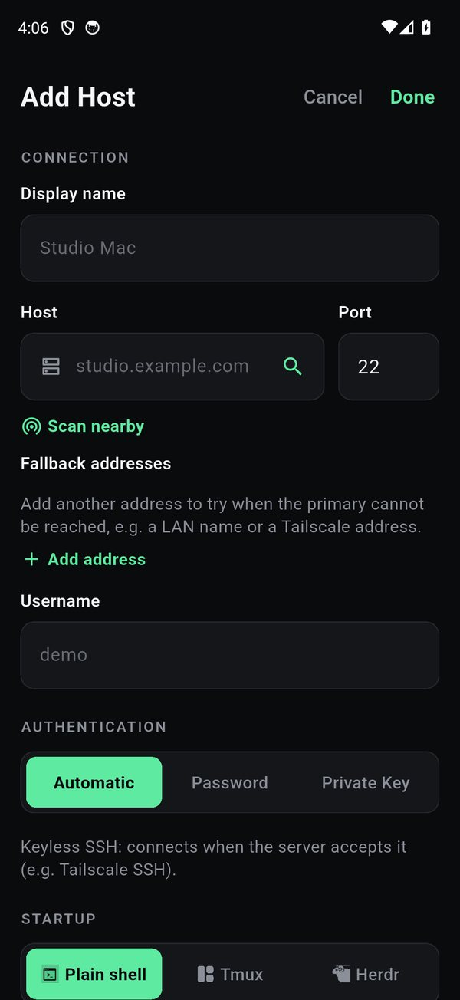
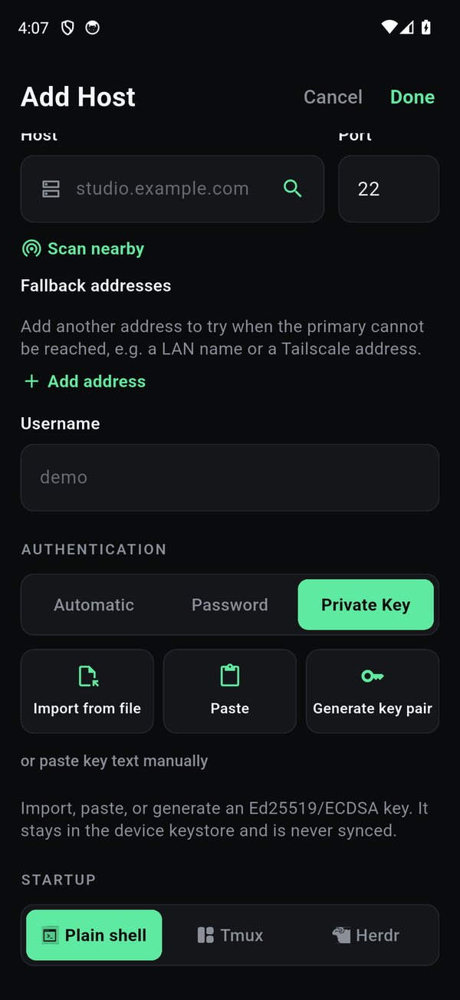
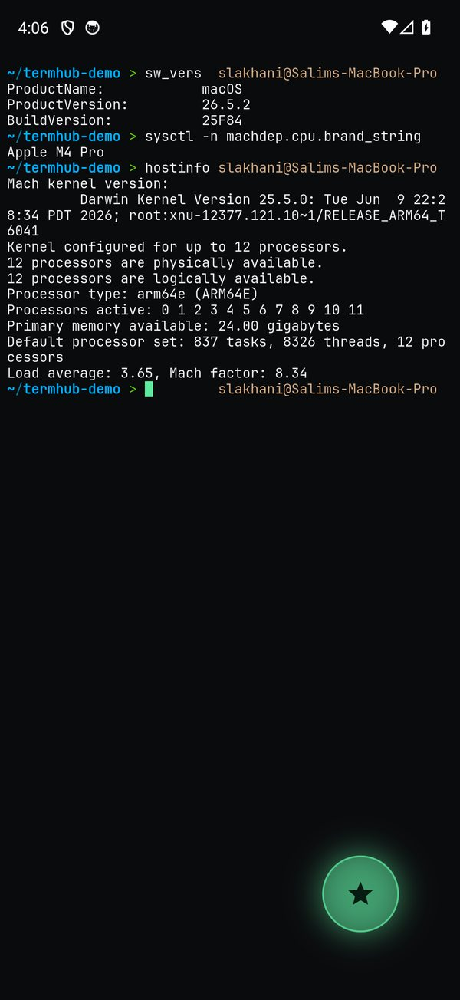
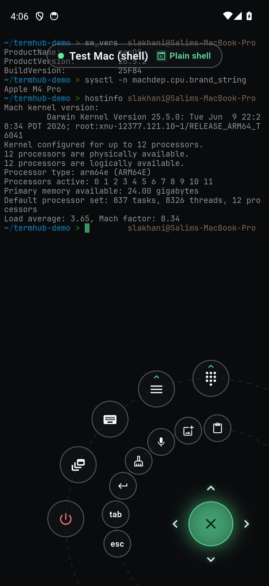
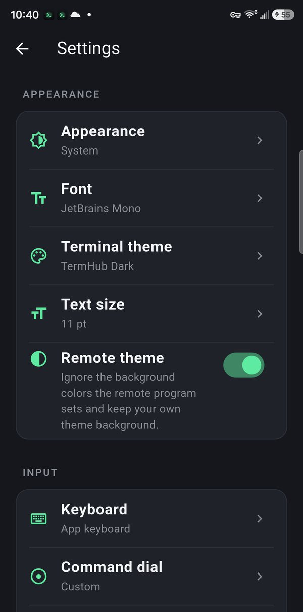
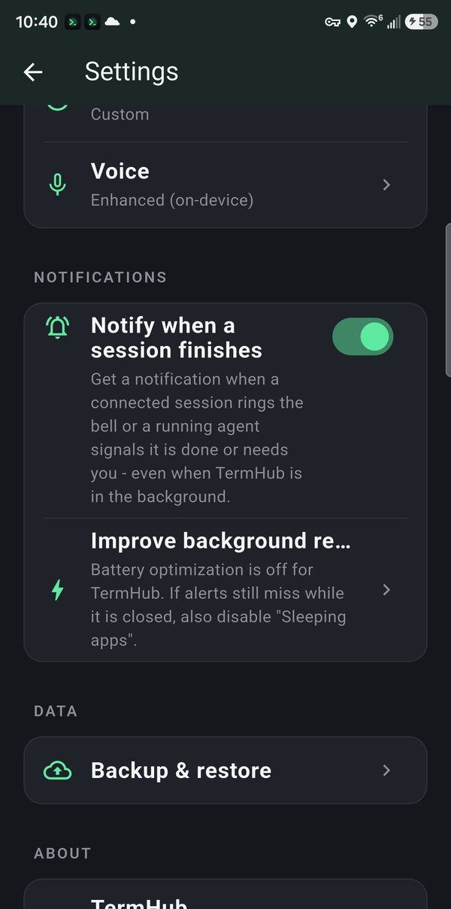
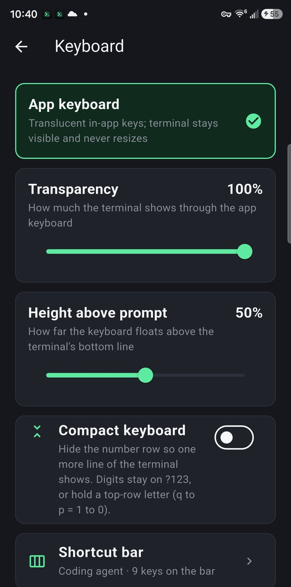
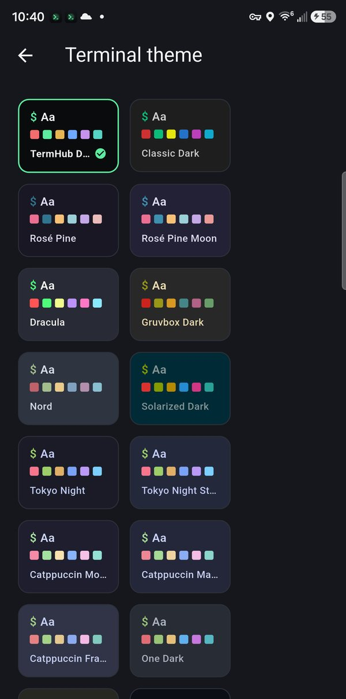

Getting started: your first connection
TermHub is a real SSH terminal for Android. Your keys stay in your phone's secure keystore and connect straight to your host, nothing passes through a TermHub server. This walks you from install to a live session, and shows you how to drive it without the on-screen keyboard.
What you'll need
- An Android phone with TermHub installed
- A server or Mac with SSH (Remote Login / sshd) enabled and reachable from your phone
- Its address, username, and either a password or an SSH key
Install TermHub
Install TermHub from Google Play. Open the app and you'll land on your hosts list with a couple of sample entries showing the shape of things.
Add your first host
Tap +, give the host a name, and enter its address and username. The port defaults to
22. The address can be a hostname, a LAN IP, or a Tailscale name, whatever you'd type aftersshon a computer.
Choose how you sign in
TermHub offers three ways to authenticate. Automatic (the default) offers keyless and configured keys before any password prompt, the right pick for a key-configured host or Tailscale SSH. Password stores a password in your device's secure keystore. Private Key lets you import a key file, paste one, or generate a new Ed25519 key pair right in the app.
If you generate a key in TermHub, add its public half to the server once:
# on the server, paste the public key TermHub shows you echo "ssh-ed25519 AAAA... you@termhub" >> ~/.ssh/authorized_keys
Choose your connection: shell, tmux, or herdr
At the bottom of the Add Host form, the Startup row decides what you land in. Plain shell is a normal terminal. Tmux or Herdr attach a persistent session, so a long-running job, a build, or an AI coding CLI like Claude Code or Codex, keeps running when the phone sleeps or the network drops, and you rejoin it on reconnect. (tmux and herdr are both terminal multiplexers; pick whichever runs on your host.)
Name the session and TermHub attaches it for you every time, you never run
tmuxby hand. Just want a quick terminal? Leave it on Plain shell.Add a fallback address optional
A host can carry a second address that TermHub tries only if the first is unreachable. Put a fast LAN address first and a Tailscale name as the fallback, and you connect locally at home and fall through to the tailnet everywhere else. See the Tailscale guide for the full setup.
Connect
Tap the host. TermHub opens a login shell so your PATH and prompt come through, runs any startup command, and drops you into a live terminal with a compact status header.

Drive it without the keyboard
Tap the floating puck to open the Command Dial, TermHub's signature control surface. From it you get common keys, a sticky Ctrl chord, arrows, Esc and Tab, saved snippets, tmux/herdr window and pane control, on-device voice, and Send Image. The soft keyboard only appears when you type a long command. Beyond the dial, URLs in the terminal are tappable, and a long-press starts a text selection you can copy.

Find your way around
The home screen lists your connections. Each row shows how it signs in and what it starts, a LIVE tag while a session is connected, and a note when an agent in it has just finished. Tap a row to connect, swipe to duplicate or delete, and long-press to edit. The gear opens Settings and + adds a host.

Settings is where you make it yours: light, dark, or system appearance, the font, a terminal color theme, and text size under Appearance; the app keyboard, the shortcut bar, and the command dial under Input; voice, completion notifications, and encrypted backup below that.




What TermHub is, and isn't
- Direct SSH, no middle server. Credentials live in the Android keystore and connect straight to your host.
- SSH transport. If your network changes mid-session, reconnect and reattach your tmux/herdr session, it's lossless. (There's no Mosh roaming.)
- One fallback address per host today, tried only on an unreachable primary.
- Your backups are yours, encrypted on-device with a passphrase only you know.
Get TermHub
TermHub is live on Google Play. Install it and connect to your first host in a couple of minutes.